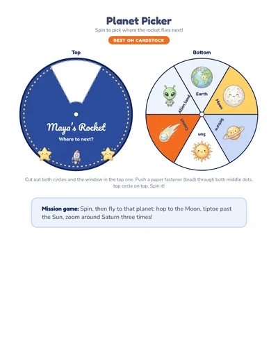
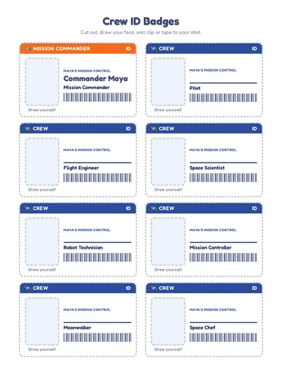
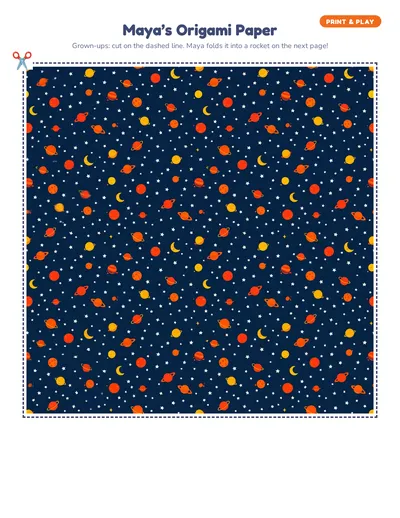
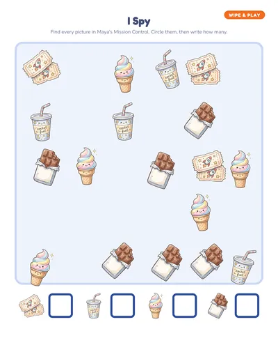

Mission Control pretend play for kids
Everything your child needs to run a pretend space mission. Print on regular Letter paper, cut along the dashed lines, and recruit some toys as the crew. Here’s how to set it up, games to play and a printable kit with your child’s name on every page.
Make a personalized Mission Control kitHow to set it up
- Tape the Mission Control sign over a desk or table.
- Make a rocket from a big box or a couch with blankets.
- Put the Launch Pad sign by the rocket and Moon Base across the room.
- Hand out boarding passes and passports.
- Pin on the crew badges and start the countdown!
Games to play
🧑🚀 Pre-flight check
Go down the health check: helmet, oxygen, boots. Tick each box.
⏱️ Countdown
Mission Control counts down from 10 while the crew buckles in.
🌕 Star map
Lay the star map on the floor and fly from Earth to every planet. Stamp the passports and hand out a mission patch.
⭐ Snack bar
Hungry astronauts pay with star credits. Great for early counting.
Who’s who
Hand out the jobs so everyone gets a turn, grown-ups and stuffed animals included:
- Pilot
- Flight Engineer
- Space Scientist
- Robot Technician
- Mission Controller
- Moonwalker
- Space Chef
For toddlers and preschoolers
Little ones love pretend play before they can read. Give them the job with the most doing, like pilot, keep the money to a few big coins and let them circle pictures on the order forms. Five to ten minutes of play is a win at this age.
Want it printed and personalized?
The printable Mission Control kit has your child’s name on the signs, badges and certificate, plus play money, order forms, props and a grown-up guide full of ideas. Pick the little kids version (ages 2 to 4) or the big kids version (5 to 8), and add the activity pack of wipe-and-play pages if you like. It arrives by email in minutes.




Questions
What age is mission control pretend play for?
Ages 2 to 8. The little kids version (ages 2 to 4) has big pictures, thick cut lines and order forms they fill in by circling, so no reading or writing is needed. Ages 5 and up get the writing version.
Do I need anything special to print it?
Regular Letter paper works for everything. Cardstock makes the money, menus and props last longer, and sheet protectors turn the activity pages into wipe-clean pages.
How do I set up a pretend mission control at home?
Tape the Mission Control sign over a desk or table. Make a rocket from a big box or a couch with blankets. Put the Launch Pad sign by the rocket and Moon Base across the room. Hand out boarding passes and passports. Pin on the crew badges and start the countdown!
More pretend play ideas
- Vet Clinic
- Dino Dig Lab
- Hero HQ
- Pirate Ship
- Royal Castle
- Unicorn Stable
- Mermaid Lagoon
- Construction Site
- Bunny Egg Factory
- Potion Shop
- Santa’s Workshop
- Valentine Post Office
- Fire Station
- Ice Palace
- Pit Stop Garage
- Pizza Shop
- Burger Shop
- Grocery Store
- Post Office
- Library
- Police Station
- Pet Shop
- Dentist Office
- Coffee Shop
- Italian Restaurant
- Auto Repair Shop